そんな後ろ向きな事務作業に、毎日何時間使っていますか？
本システムを導入すれば、事務所の無駄な作業が全滅します。
2026年問題や深刻な人手不足。この苦しい状況を乗り越えるには、「売上アップ」「経費削減」「IT化」が必須です。このアプリには、そのすべてが網羅されています。
大手の高額でガチガチなシステムは現場では使えません。
私たちが本当に欲しかったのは、「事務所のムダ作業が消え」「ドライバーが迷わず」「利益がすぐ見える」要領第一の仕組みです。
これを機にワンランクアップして、この苦境を共に乗り越えましょう！
同じ作業を、毎日・毎月・何年も繰り返すコストを計算したことがありますか？
| 比較項目 | ❌ 今のExcel・手書き | ✅ Smart Simple System |
|---|---|---|
| 日報入力 | 紙に手書き→夕方に事務所で打ち直し。1日30〜60分の虚無 | ドライバーがスマホで打刻した瞬間に事務所へ自動反映。転記ゼロ |
| 監査書類 | 月末に事務員が徹夜で帳尻合わせ。ミスが怖くて毎回ヒヤヒヤ | 点呼ボタンを押すだけで点呼記録簿・乗務記録が自動完成 |
| 損益管理 | 「この荷主、本当に儲かってるの？」が感覚任せ。交渉材料なし | 1行程ごとに経費・利益を自動算出。赤字運行をピンポイント特定 |
| 配車ミス | 休みのドライバーに配車、車両の重複、積地の空白を見落とす | 休み→グレーアウト、空白→色付きアラート。一目で全ミスを発見 |
| 距離計算 | 毎回Googleマップで調べてメモ。1行程につき2〜3分のロス | 目的地を入力するだけでAIが実走距離を自動算出・自動記載 |
| ETC照合 | 明細書と日報を目で見比べる苦行。月末に数時間かかる | ETC明細CSVを読み込ませるだけ。カード番号×運行日で全自動紐付け |
| 月末処理 | 翌月ファイルのコピー、旧データの整理、数式の引き直し…… | 「月またぎ処理」ボタン1つ。アーカイブ＆翌月ファイル生成まで全自動 |
| ドライバー報告 | 「着きました」「出ます」の電話・LINEが1日中飛び交う | アプリのボタン1つで事務所のステータスに即反映。電話ゼロへ |
| 複数人での同時操作 | Excelは共有が難しく、同時編集でファイルが壊れるリスクあり | 本社・支店・外出先から同時にアクセス可能。ドライバーの打刻が重なっても順番に処理され重複しない |
Excelとの差は「便利さ」ではありません。
毎月何十時間もの人件費と、見えていない赤字運行の差です。
「この荷物、結局いくら儲かっているのか？」という不安を根絶します。
1運行ごとに経費と利益を即座に自動算出。利益の少ない運行をピンポイントで特定し、荷主との運賃交渉の確固たる材料として活用できます。
※表示される利益はおおよその金額です。
正確な利益算出には、事前に車両ごとの経費や歩合などの設定が必要です。
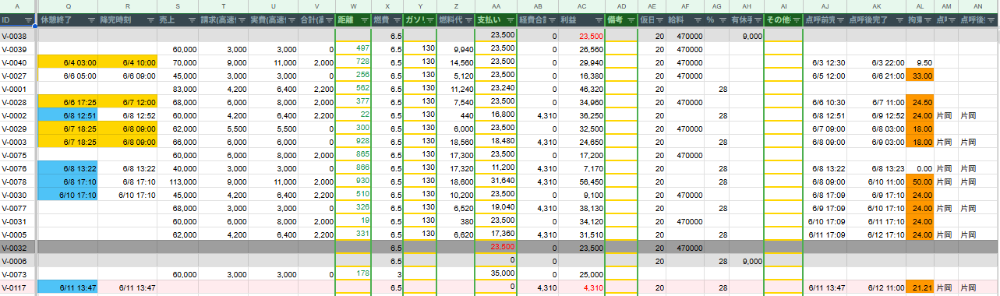
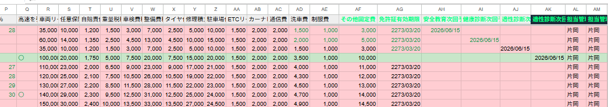
乗務員がスマホで「点呼」ボタンを押すだけ。その操作が、国交省の監査で求められる点呼記録簿や乗務記録の自動完成に直結します。
月末に事務員が徹夜して帳尻を合わせる地獄の作業は、今日で完全に終わります。
※出力される帳票の法定書類としての有効性は保証しておりません。実際の監査対応については所轄の運輸支局にご確認ください（利用規約第8条）。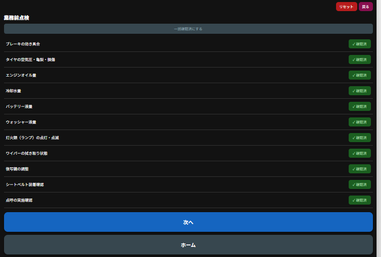
事務所は使い慣れたExcelに通ずる「Googleスプレッドシート（GAS制御）」を採用。Googleの堅牢なインフラを基盤としているため、高いセキュリティ水準を実現しています。
現場の入力データは裏側で秒単位で同期。スプレッドシートはPCでもスマホのブラウザからでもアクセスできるため、外出先からでも運行状況をリアルタイムで確認できます。
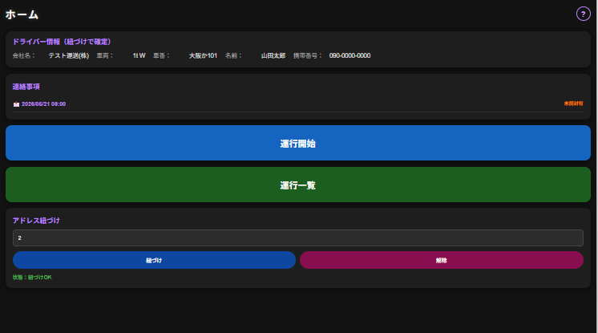
電波が届かない場所でのエラーや、ボタンの押し忘れにも柔軟に後から事後修正ができる仕様です。
一度押したら変更できず現場がパニックになるガチガチなシステムとは違う、現場を回すための究極のUIです。
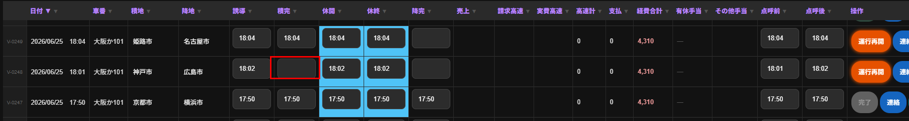
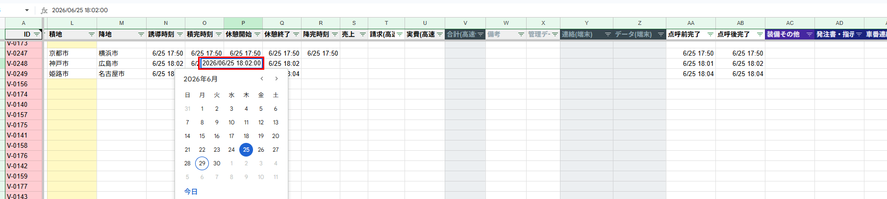
ドライバーがスマホに入力した瞬間に、事務所のシートへ自動反映。夕方に紙を回収して打ち直す「虚無の時間」が完全になくなります。
空いた時間を配車や営業などの本業に割くことで、自然と売上拡大に繋がる体制を作ります。
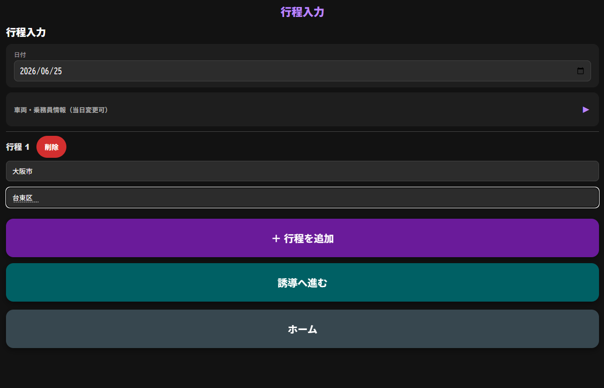
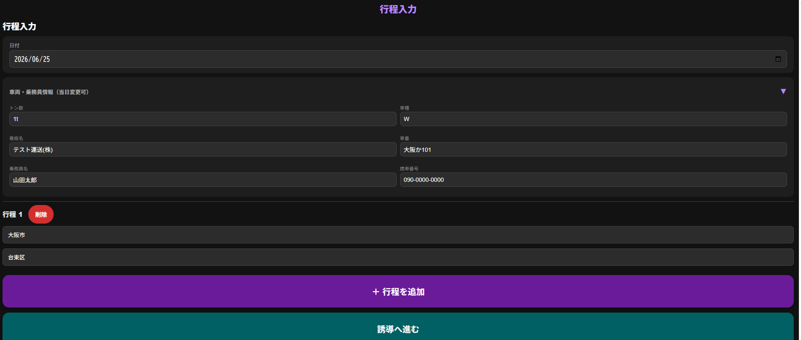
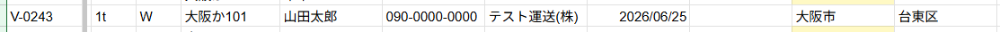
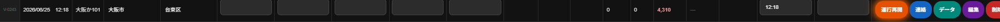
休みの乗務員はグレーアウト、配車が埋まっていない積地には色が付きます。
PC画面を一瞥するだけでミスを発見でき、「休みの日なのにトラックを当ててしまった」等のエラーを未然に防ぎます。
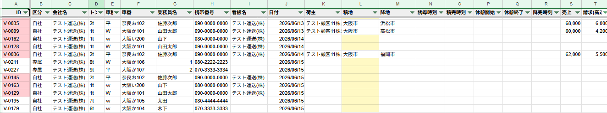
事務員が殺気立つ月末の面倒な移行作業が、ボタン一つで全自動処理されます。
自動で当月の運行データをアーカイブし、次月用ファイルを生成。過去データを間違えて消してしまうリスクを排除します。
▶︎ 詳しくはお試しで体感する（無料）目的地を入力するだけで、AIが正確な実走距離を自動算出してシートに記載。
毎回ネットでルート検索して距離をメモする、あの細かい手間が一切なくなります。
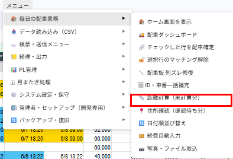
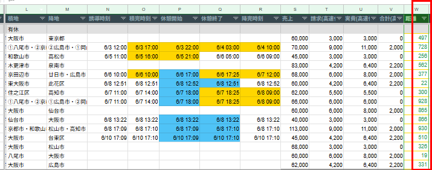
点呼・積込・休憩・降完など、ドライバーがボタンを押した瞬間の時刻だけをSSとアプリの一覧に記録します。
就業時間外は一切追跡しないため、「家まで監視されている」というドライバーの不満をゼロにし、離職防止につながります。
位置情報はデジタコ等で必要な範囲のみ管理。信頼関係を守りながら運行を把握できる設計です。
① 行程入力
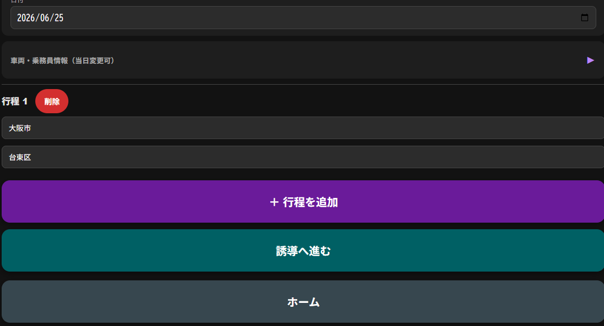
② 点呼前確認
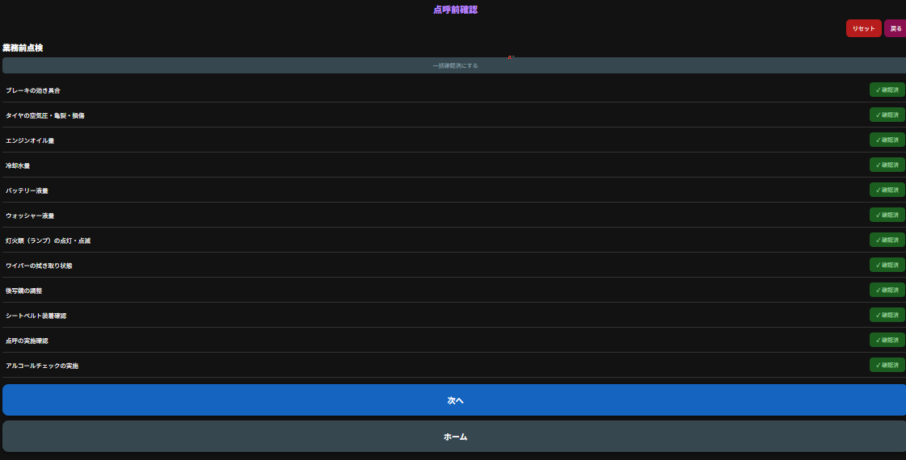
③ 誘導
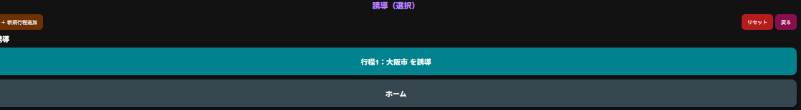
④ 積完
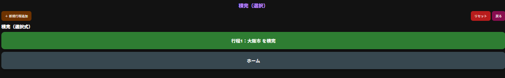
⑤ 休憩開始
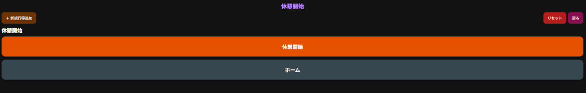
⑥ 休憩終了
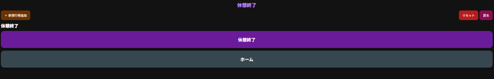
⑦ 点呼後確認
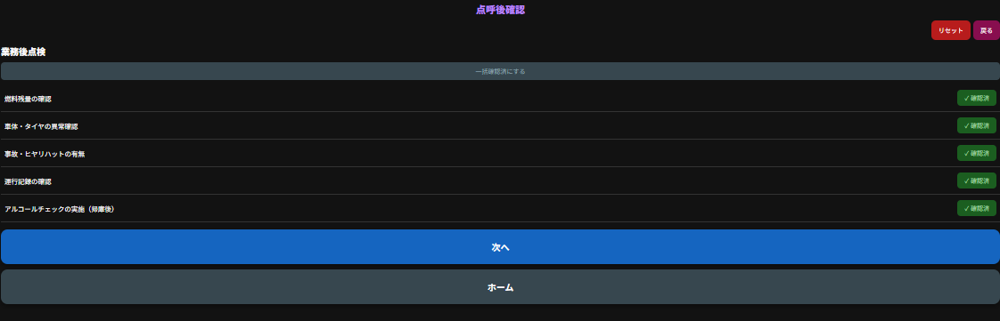
⑧ 降完
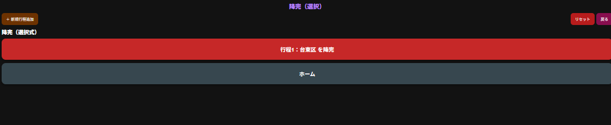
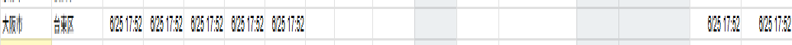
「いま着きました」「出ます」といった連絡は、アプリのボタンを押すだけで事務所のステータスに即座に反映されます。
トラックをわざわざ安全な場所に止めて、電話やLINEをする必要はもうありません。
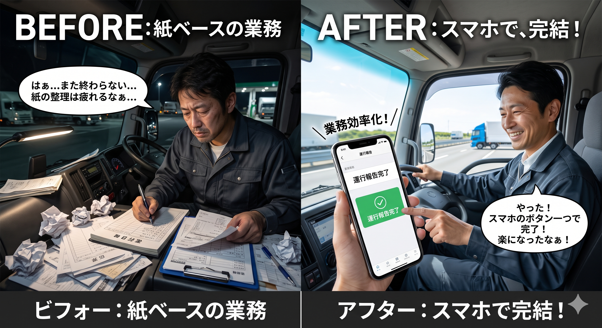
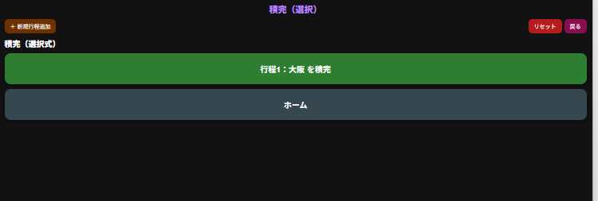
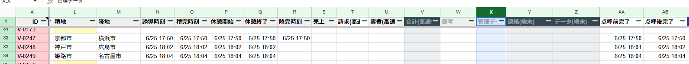
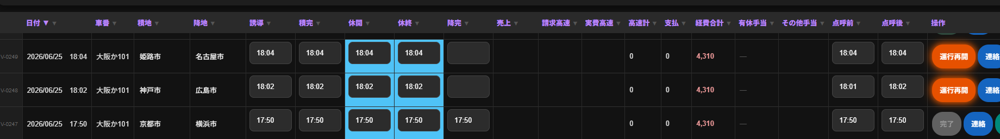
配車確定後、車番情報を荷主のアドレス等へ即座に一括送信します。
毎日発生する電話やFAXでの「明日の車番まだ？」という催促をシャットアウトし、精神的負担を下げます。
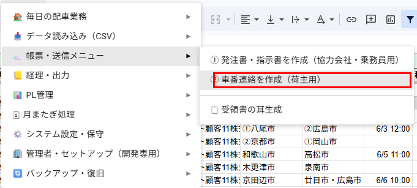
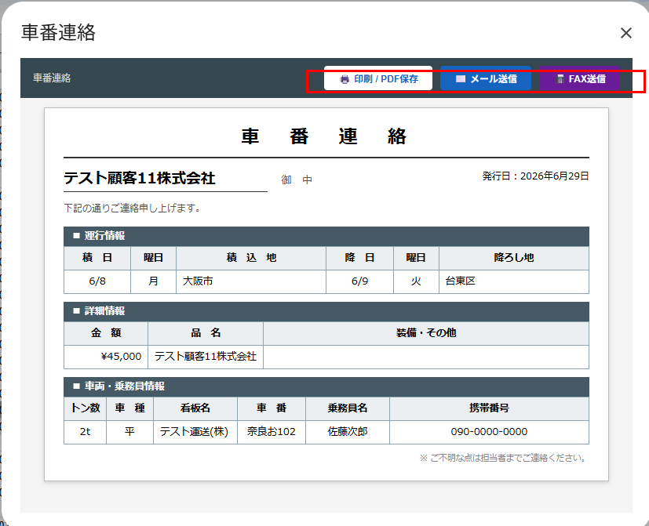
↑ 右上から印刷・PDF保存・メール送信・FAX送信とお好きな方法で荷主へ即送信できます。
▶︎ 詳しくはお試しで体感する（無料）納品時に現場で必ず必要になる受領書の「耳」。こんな細かい紙切れの処理までシステムから一括出力可能です。
現役の管理者が実務ベースで作ったからこそ、現場の細かい処理まで完璧にカバーしています。
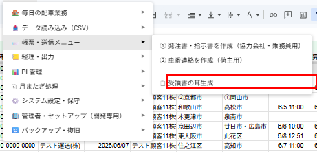
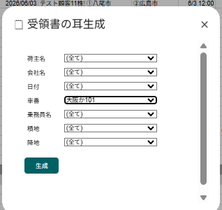
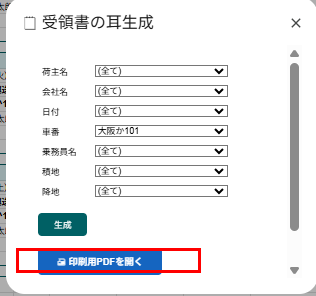
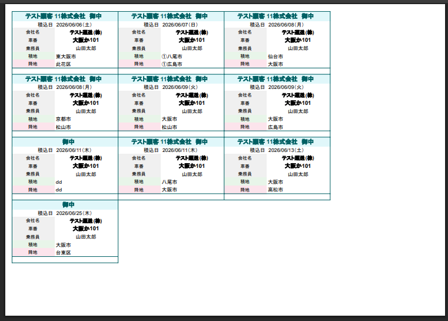
高速代のETC明細（CSV）を読み込ませるだけで、カード番号と運行日時を突き合わせて各行程に自動反映します。
膨大な明細書と日報を見比べる苦痛な照合作業を完全にゼロにします。
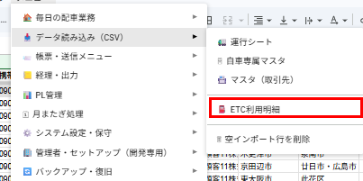
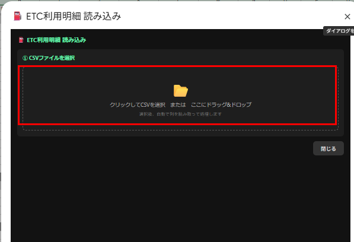
↑ ここにETC利用明細（CSV）をドロップするだけ。車番・日時を自動で読み取り、該当行程に高速代を自動反映します。
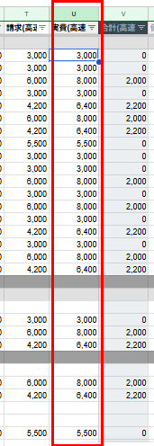
月末に締めボタンを押すだけで、運賃データを荷主ごとに集計した請求書用データが一発で生成されます。
全データをCSVで出力し、お使いの会計ソフトへ読み込ませるだけで経理の転記ミスも防げます。
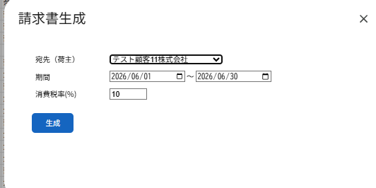
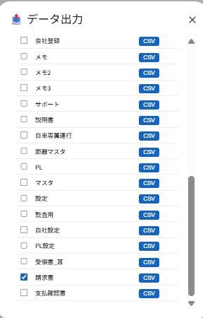
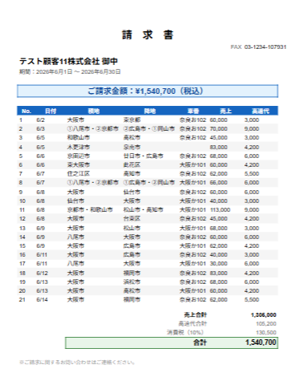
LINEの「無料お試し」をご登録いただくと、実際のアプリをお手元のスマホで今すぐ触っていただけます。
現場が変わる瞬間を、まずは無料で体感してください。